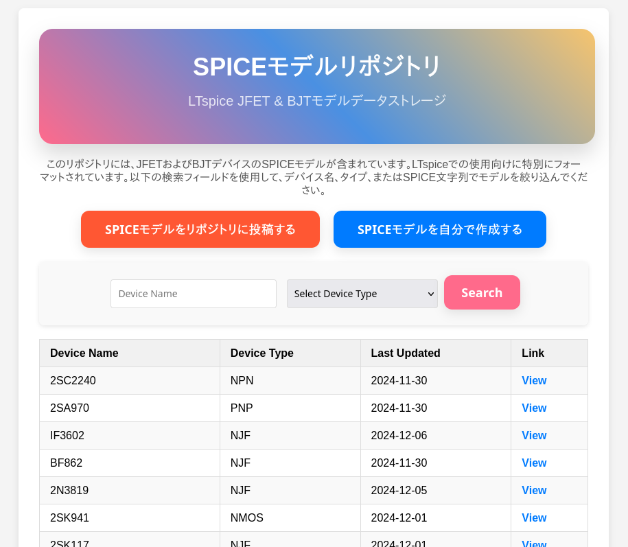

DIYオーディオエンジニアリング & MEMSマイク自作ガイドへようこそ
バーチャ農ちゃんねるのYouTube動画概要から集約されたノウハウをもとに、MEMSマイクのDCプリアンプ設計・低ノイズ化、JFET差動回路、高調波歪率測定、LTspiceシミュレーション、ロックインアンプ修理・メンテナンス、AIツール活用など、幅広いDIYオーディオ技術を日本語で詳しく解説します。
LTSpice JFETモデルシミュレータ
シミュレーション用JFETモデルを管理・編集できるオンラインツールです。自作回路のシミュレーションにお役立てください。
ツール
🔧 設計・開発支援ツール
- 低ノイズアンプ LNA-01 – 低ノイズDCプリアンプの設計情報と部品表を掲載しています。
- LTSpice JFETモデルシミュレータ – JFETモデルの管理・編集をWEB上で手軽に行えます。
🧮 選別・最適化ツール
- JFET IDSS 最適ペア選定ツール – 複数のJFETのIDSS測定値から、最も特性の揃ったペアを探索します。
- JFET IDSS ペア最適化(GA版) – Memetic GAを用いて、大規模なJFETリストから最適なペアを高速に探索します。
📉 ノイズ計算ツール
- ノイズ電圧 & 熱ノイズ抵抗計算 – 測定ノイズレベルがどの程度の抵抗の熱雑音に相当するかを計算します。
- 入力換算ノイズ電圧/電流密度計算機 – 2点の測定結果から、アンプの入力換算電圧・電流ノイズを算出します。
- 多点入力換算ノイズ電圧/電流密度計算機 – 複数点のデータから、最小二乗法で高精度にノイズをフィッティング計算します。
- 抵抗値 vs 入力換算ノイズ電圧計算機 – オペアンプのノイズ性能をグラフで可視化し、最適なソース抵抗値を求めます。
- LNA入力ノイズ計算機 – アンプの出力ノイズとゲインから、入力換算ノイズを簡単に計算できます。
🔁 単位換算・信号処理
- 信号レベルコンバータ – Vrms, Vpp, dBV, dBuなど信号レベルの単位を双方向に変換します。
- インピーダンス不整合計算機 – 信号源と測定器のインピーダンスミスマッチによる電圧変化を計算します。
- オペアンプ帰還計算機 – オペアンプの帰還回路の遮断周波数や減衰量を計算、または逆算します。
🧪 測定・評価ツール
- オーディオ測定用プログラム (GitHub) – DIYオーディオ測定向けのプログラムをまとめています。
リソース／ダウンロード
ダウンロード可能なリソース
読み込み中…
参考リンク
自作以外の情報源や役に立つ外部記事へのリンク集です。
- 読み込み中…
AIによる調査記事
- 読み込み中…
YouTubeチャンネル＆お問い合わせ
最新動画はYouTubeで随時公開中！チャンネル登録＆通知オンで新着を見逃さずチェックしてください。ご質問・ご要望はコメント欄またはサイト下部のお問い合わせフォームからお気軽にどうぞ。
YouTubeチャンネルへ移動